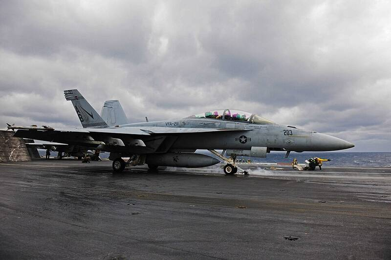

Gimbal and GoFast videos
Off Jacksonville, 2015

Videos from USS Theodore Roosevelt's F/A-18s in January 2015 show objects the pilots could not identify. The Pentagon released them in 2020. Location is approximate. 1,2
Open in the interactive Watcher
Related
- The Navy UAP videos show real, unidentified objects Claim
- The GoFast object was racing just above the ocean Claim
- Tim Gallaudet Person
- Mick West Person
- Ryan Graves Person
Sources
- Pentagon UFO videos Wikipedia
- Statement by the Department of Defense on the Release of Historical Navy Videos U.S. Department of Defense, Apr. 27, 2020